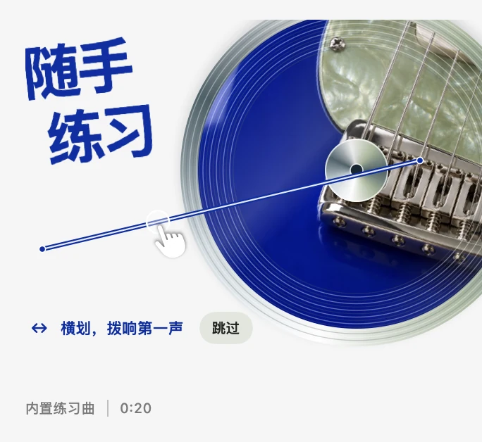
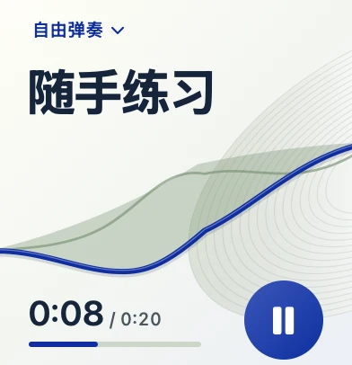

自由跟弹
原曲照常播放。挥腕时，手表带出录音里的伴奏细节，蓝弦回弹，停手后余音自然收住。

从本地导入歌曲，也可以先在内置练习的唱片上横划试拨。

手表独立播放已送达的歌曲。个人挥幅可以校准，触感也可单独设置。
画面取自 App 的 SwiftUI 原生组件。
体感音游
手机是赛道，
手表是手柄。
开局前选 iPhone 或 Apple Watch 出声。音符接近判定线时挥腕，每次有效挥动都有击弦声与动效，踩中拍点获得分数和连击。
- 谱面
- 按歌曲起音与局部节拍生成
- 操作
- 手表挥腕，或用 iPhone 点屏练习
- 纪录
- 按曲目版本和操作方式保存最佳成绩
开始使用
准备好已配对的 iPhone 和 Apple Watch，两端安装同一版本的应用。可以直接从内置曲《随手练习》开始。
- 导入音乐
- 在 iPhone 资料库选择「导入」，支持 MP3、M4A、WAV 和 AIFF，单个文件最多 100 MB。
- 选播放设备
- 自由跟弹在手表播放。体感音游可从手机或手表出声，选手表播放自己的歌时，请先点「用手表弹」，等到「手表已就绪」。
- 系统与安装
- iOS 18 及以上，watchOS 11 及以上。用 Xcode 构建，或使用项目的未签名 IPA，签署手机 App 及内嵌的手表 App 后安装。